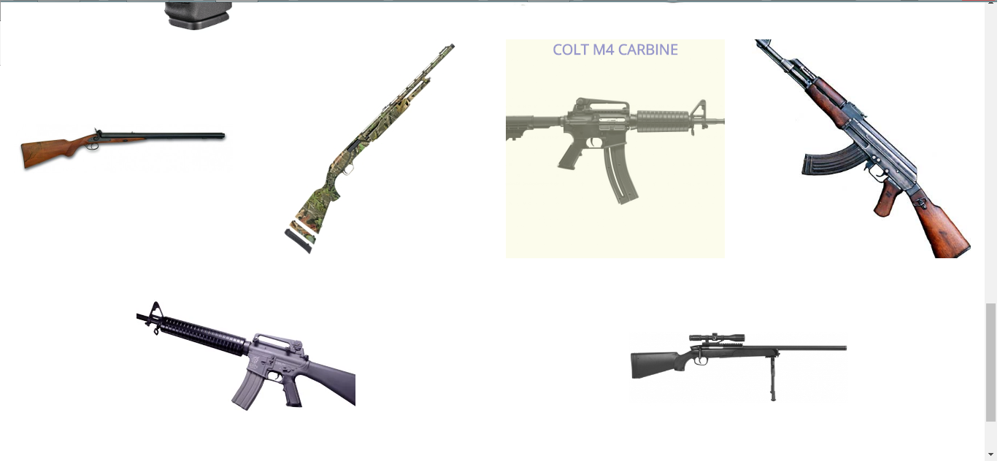

Dane kontaktowe:
- Tel. 503009984
- r.j.czerwinski@gmail.com
- Ul. Wiatraczna 13a
- 04-364 Warszawa
Umiejętności:
- HTML5 - budowa struktury stron
- CSS3 - nadawanie stronom wyglądu
- SASS - ułatwienie pracy z arkuszami stylów
- GRUNT - automatyzacja podstawowych zadań
- Git - praca z lokalnymi i zdalnymi repozytoriami danych
- Twitter Bootstrap - budowa stron w oparciu o popularny framework
- JavaScript - umiejętność budowania prostych skryptów
- RWD - tworzenie responsywnych stron internetowych
Języki obce
- Język angielski - B2
- 
Przykładowa strona poświęcona tematyce blroni palnej.